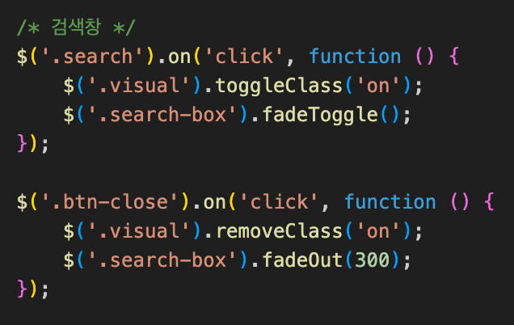
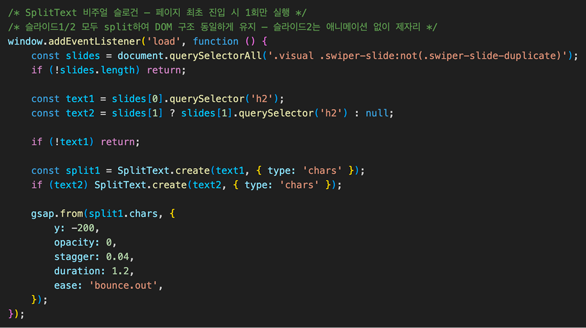
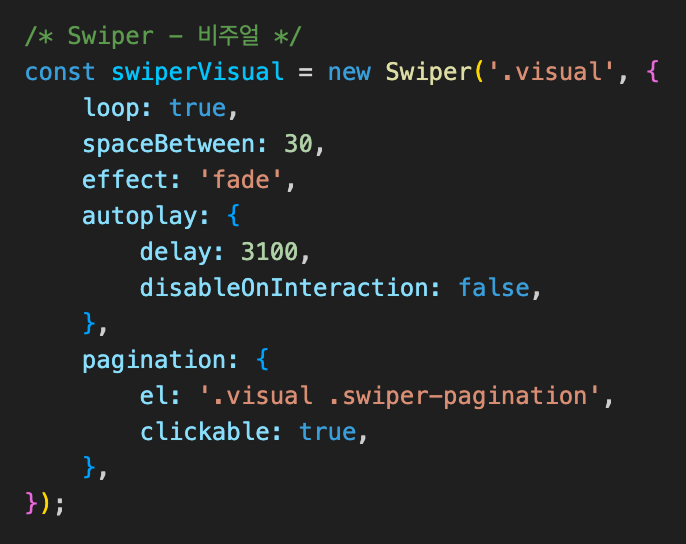
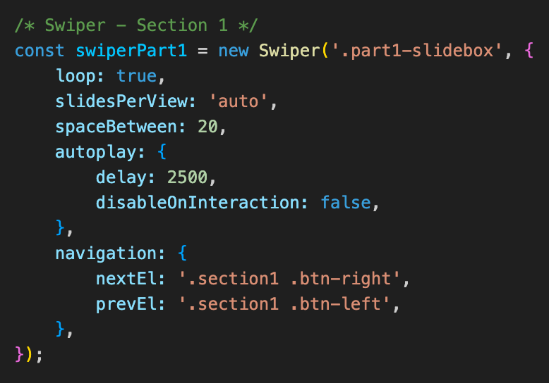
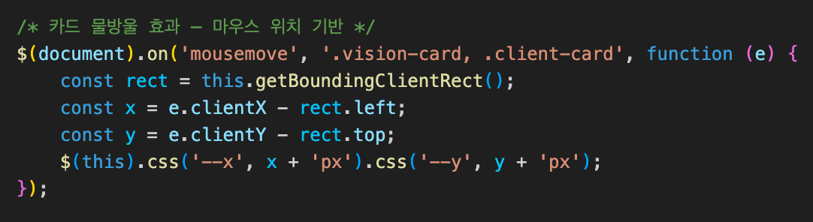
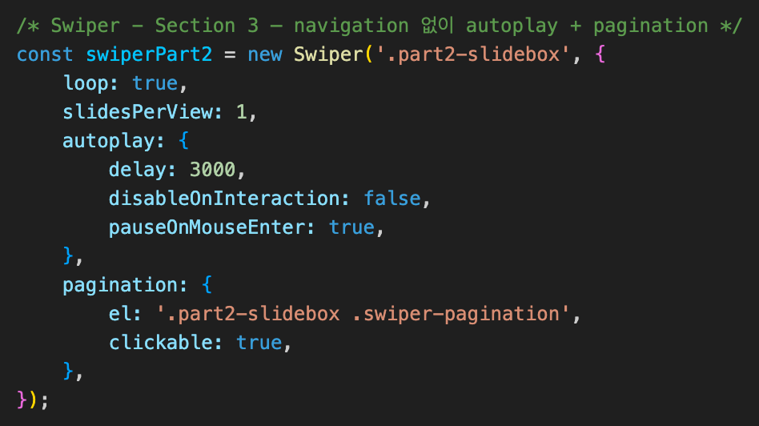
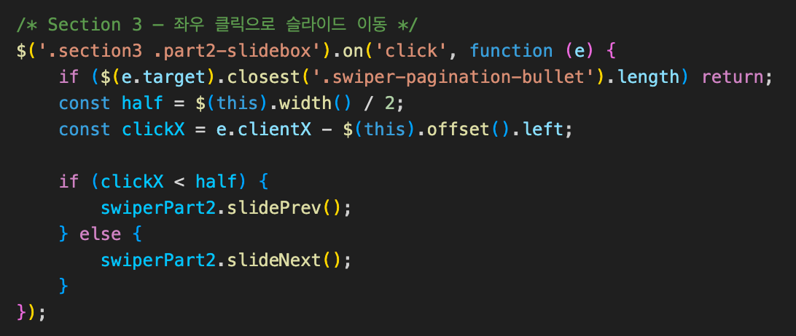
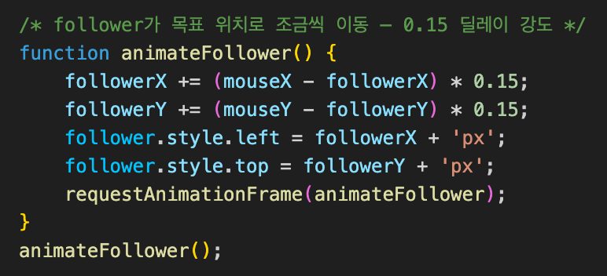
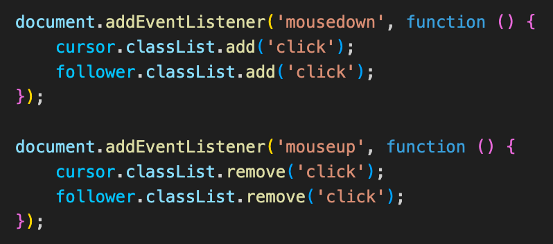

Project Workflow
01
Discovery
- 크리에이티브 디자인 에이전시 특성 파악
- 작업물이 중심이 되는 포트폴리오 사이트 기획
- 레퍼런스 수집 및 차별화 방향 설정
02
Design
- Apple Liquid Glass 트렌드를 기반 글래스모피즘 디자인 컨셉 수립
- 작업물이 돋보이도록 무채색 컬러 팔레트 선정
- 다크 톤 베이스 + Whisk AI로 생성한 3D 오브젝트를 비주얼 이미지로 활용
- Figma로 와이어프레임 및 UI 디자인
03
Development
- SCSS mixin으로 glass, glass-card, section-textbox 공통 스타일 관리
- GSAP SplitText로 슬로건을 char 단위로 분리, bounce.out ease로 위에서 떨어지는 효과 구현
- 검색 클릭 시 toggleClass로 비주얼 어둡게 처리, fadeToggle로 검색창 표시/숨김 구현
- Swiper Infinity Loop로 포트폴리오 무한 슬라이드 구현
- requestAnimationFrame 기반 커스텀 커서 물방울 효과 구현, 터치 디바이스 분기 처리
- radial-gradient + CSS 변수(--x, --y)로 마우스 위치 기반 카드 shimmer 효과 구현
04
Refactoring
- CSS 변수(:root) 도입으로 컬러/shadow/radius 중앙 관리
- glass-card mixin에 aspect-ratio: 1/1로 정방형 보장
- section3 big-glass 제거, flex 레이아웃으로 재설계
- button 태그 전환 및 aria-label 추가 (시맨틱 마크업 개선)
- vh 단위 제거, clamp 기반 반응형 타이포그래피 적용
- slidesPerView: 'auto' + 고정 폭(280px) 슬라이드로 변경
- section3 navigation 제거, Swiper pagination으로 대체
- section3 좌우 클릭 이동 이벤트 구현
05
QA
- 크로스 브라우징 테스트 (Chrome, Safari)
- 반응형 검증 (1280/1024/768/480px 브레이크포인트)
06
Deploy
- GitHub Pages 배포
Header - Search box
검색 클릭 시 toggleClass로 비주얼에 클래스를 추가해 배경을 어둡게 처리하고, fadeToggle로 검색창을 표시/숨김 처리했습니다. 닫기 버튼에는 fadeOut(300)을 적용해 자연스럽게 사라지도록 구현했습니다.


Visual
GSAP SplitText로 슬로건을 char 단위로 분리해 위에서 떨어지는 효과를 구현했습니다. 슬라이드1/2 모두 split 처리해 DOM 구조를 통일함으로써 슬라이드 전환 시 텍스트 위치 어긋남을 방지했습니다. Swiper Infinity Loop로 비주얼 이미지가 자동 순환됩니다.


Section 1
slidesPerView: 'auto'와 고정 폭(280px) 슬라이드로 뷰포트에 따라 자연스럽게 노출 개수가 결정됩니다. 좌측 텍스트박스에 glass mixin을 적용해 글래스모피즘 요소(backdrop-filter, rgba)를 구현했습니다.

Section 2 & 4
glass-card mixin으로 vision-card와 client-card를 구성했습니다. Section 2의 첫 번째 카드는 grid-row: 1/3으로 좌측에 크게 배치하고 나머지 두 카드는 우측에 2행으로 쌓이는 레이아웃입니다. 두 섹션 모두 호버 시 radial-gradient shimmer 효과가 마우스 위치를 따라 움직입니다.

Section 3
Swiper pagination으로 슬라이드 인디케이터를 구성했습니다. 슬라이드 좌우 클릭으로 이동할 수 있으며, pagination bullet 클릭과의 이벤트 충돌을 closest()로 방지했습니다. pauseOnMouseEnter로 호버 시 자동재생이 멈춥니다.


Custom Cursor
requestAnimationFrame으로 follower가 목표 위치로 조금씩 이동하는 물방울 효과를 구현했습니다. 클릭 시 cursor가 줄어들고 follower가 퍼지며 물방울 퍼짐 효과를 연출합니다. 터치 디바이스에서는 커서를 숨기고 기본 커서로 복원됩니다.


Footer
border-top 구분선으로 심플하게 처리했습니다. tel: 링크로 고객상담 대표번호에 바로 연결되도록 구현했습니다.